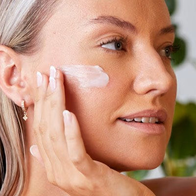
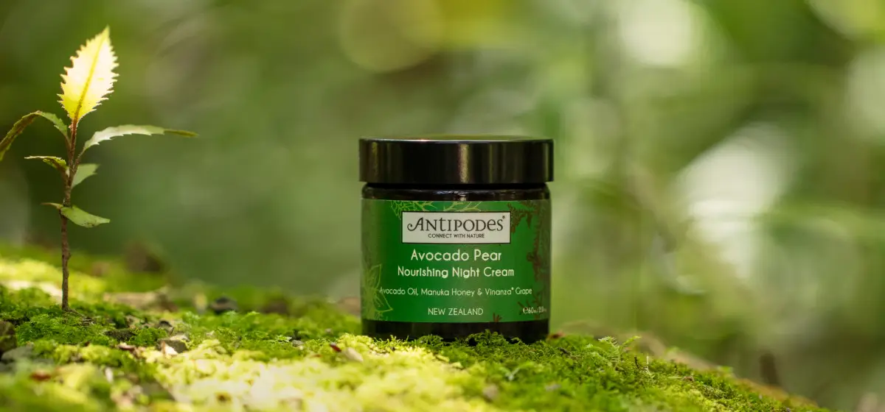

“From forest to face, we care deeply about our environmental impact - which is why we're on a journey to eliminate plastic from our packaging for good.”
ELIZABETH BARBALICH,
ANTIPODES FOUNDER & CEO
NEW ZEALAND NATURE
INNOVATIVE DISCOVERIES
SUSTAINABILITY

HEALTHY SKIN
NATURAL INGREDIENTS
SCIENTIFIT VALIDATION
SKINCARE TIPS
Probiotic skincare for blemishes may be invisible to the naked eye, but probiotics are a blessing for banishing blemishes. Hailed for their positive impact on gut health, the benefits of probiotics in skincare are now being harnessed by beauty experts. So, what is probiotic skincare, and why is it the secret to calm, clear, hydrated skin?With science singing the praises of probiotics for skin, cutting-edge natural beauty brands like Antipodes® have embraced the use of probiotics in skincare. Culture Probiotic Night Recovery Water Cream is the result of eighteen months of research and development. With the power of good bacteria, the water-rich moisturiser cultivates healthy looking skin while you sleep.
Antipodes® uses a special probiotic strain for their ground-breaking new product. Kalibiome AGE Probiotic: a super clever, super innovative postbiotic technology. This non-live bacteria is extracted from live cells and double fermented to remove toxins. It's scientifically shown to support the skin barrier by sealing the skin’s epidermal layers and balancing the microbiome. While you sleep, the cloud-soft cream gets to work on helping to decrease roughness and redness in the skin. Supporting this clever technology is plant hyaluronic acid, a powerful hydrator. Mamaku black fern is a New Zealand bioactive that promotes a renewed complexion. Clean, powerful natural ingredients.
How to treat hormonal acne at any age
Hormones: can’t live with them, can’t live without them. Hormones are integral to our bodies and our skin. They regulate our emotions, our metabolism, our reproductive cycles, and so much more. Hormonal skin changes can result in skin that’s prone to breakouts, skin blemishes, dullness, and irritation. Or just skin that’s a little less than happy! Thankfully, our skincare can help treat hormonal acne and bring harmony to skin.
Strengthen your skin barrier For hydrated, healthy skin
Daily routine – check. Nourishing natural products – check. So why the stressed skin? If your regime isn’t giving you a glowing visage, it's time to check in with your skin barrier. We often neglect this critical aspect of our skin. But restoring your damaged skin barrier might just unlock the potential of your skincare routine.
Show to get glowing skin without makeup
Flat and matte is out. Luminous, dewy skin is in. So what’s the best way to achieve a natural, healthy glow without the help of synthetic sparkles or pore-clogging powders? Alongside diet, exercise, and overall wellness, your skincare routine makes all the difference. Our favourite routine brings together the best products for glowing skin that looks fresh and healthy – with or without makeup.
SUSTAINABILITY

The benefits of vegan skincare
Choosing vegan is a step towards living a more eco-friendly lifestyle – so we’re all for it. As conscious consumers, we are used to being mindful about what we put in our bodies. But what about on our skin? Vegan skincare is one of the best ways to ensure that your regime is as kind to your skin as it is to the planet. Read on to find out the benefits of vegan skincare and how to incorporate vegan products into your regime.
Antipodes: A sustainable skincare brand backed by science
Aging is healthy – so naturally, we want our skin to look the part. Natural anti-aging skincare can support the healthy aging process by helping skin to retain its youthful energy. From the best anti-aging serum to the best moisturiser for aging skin, here are four easy ways your skincare routine can help to reduce the appearance of premature aging.
The benefits of natural & organic skincare
We've all heard it before - we are what we eat. Well, we're also what we put on our skin. Conscious consumers are opting for natural and organic skincare as part of an all-round greener lifestyle. Antipodes® treats "natural" and "organic" as more than words. They represent a philosophy about what is best for the health of skin.
How to get rid of dark circles
While dark circles are common and perfectly natural, they can make you look older and feel self-conscious. So, if you’re wondering how to get rid of dark circles, keep reading. We explain what causes dark circles and how to reduce their appearance for more youthful and radiant-looking eyes.
Get 15% off your first purchase
Sign up to our newsletter and you’ll receive 15% off your next purchase.